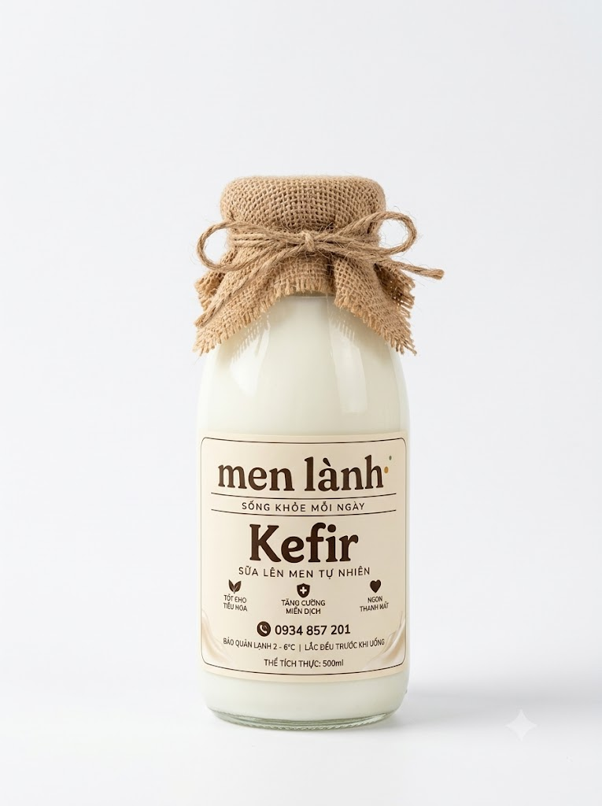
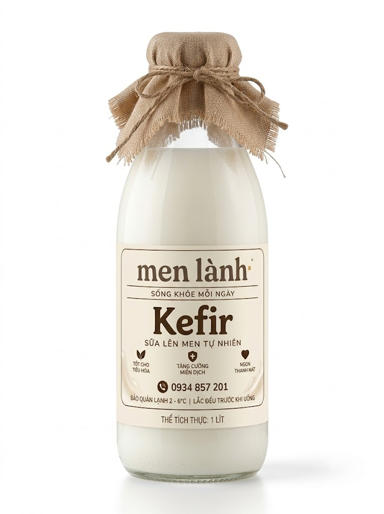

Sữa chua kefir thủ công lên men tự nhiên từ hạt men truyền thống. Chăm sóc hệ vi sinh đường ruột mỗi ngày — nhẹ nhàng, bền bỉ, không cần ăn kiêng hay detox cực đoan.
Phụ nữ hiện đại bận rộn không cần thêm áp lực phải hoàn hảo. Bạn chỉ cần đường ruột được chăm sóc đúng cách.
Sau bữa ăn bụng hay ấm ách, nặng nề. Dù ăn ít hay kiêng khem, cảm giác ì ạch vẫn theo bạn cả ngày dài làm việc.
Uống nước ép thanh lọc, ăn kiêng gắt gao được 3-5 ngày là kiệt sức, rát ruột. Vừa dừng lại là cơ thể lại mệt mỏi như cũ.
Dùng bao nhiêu mỹ phẩm đắt tiền nhưng da vẫn sần sùi, thiếu sức sống vì gốc rễ độc tố từ đường ruột chưa được xử lý.
Uống viên nang hay cốm men vi sinh như uống thuốc, vừa tốn kém vừa khó biến thành thói quen thưởng thức mỗi ngày.
Cùng mang tiếng là "sữa chua", nhưng sự khác biệt nằm ở độ sống của men và thời gian ủ.
| Đặc điểm | Men Lành Kefir Khuyên dùng | Sữa chua công nghiệp |
|---|---|---|
| Số lượng chủng men | ✓ Hơn 30-50 chủng lợi khuẩn & nấm men sống | ✗ Chỉ 1-2 chủng men nuôi công nghiệp |
| Trạng thái lợi khuẩn | ✓ Men sống tự nhiên, tiếp tục hoạt động trong ruột | ✗ Qua xử lý nhiệt/tiệt trùng làm giảm hoạt tính |
| Hấp thu đường Lactose | ✓ Đã phân giải 99% lactose, không lo đau bụng | ✗ Dễ gây đầy bụng ở người nhạy cảm lactose |
| Đường & Phụ gia | ✓ 0 đường hóa học, 0 chất làm đặc gelatin | ✗ Nhiều đường tinh luyện & chất ổn định |
| Quy cách sản xuất | ✓ Mẻ nhỏ 50-100 chai, ủ tươi giao trong tuần | ✗ Sản xuất công nghiệp hàng loạt, để lâu |
100% lên men tự nhiên bằng hạt Kefir truyền thống từ sữa tươi sạch. Vị chua thanh mộc mạc, không chất bảo quản.

Vị chua thanh mát lành, êm ru đường ruột. Thích hợp cho cá nhân sử dụng đều đặn trong 2 đến 3 ngày (~150ml mỗi sáng).

🔥 Tiết kiệm nhất · Cho cả gia đìnhDung tích lớn tiết kiệm chi phí, đủ uống trong 4 đến 5 ngày. Lựa chọn hoàn hảo để cả gia đình cùng chăm sóc hệ tiêu hóa.
Chúng tôi không hứa hẹn cơ thể bạn sẽ thay đổi sau một đêm. Chúng tôi chỉ tin rằng: đường ruột khỏe mạnh là nền tảng của một tinh thần thư thái và làn da tươi tắn.
Lần đầu nghe về kefir? Không sao cả. Ở đây không ai giáo điều — chỉ chia sẻ nhẹ nhàng thôi.
Chai 500ml (40.000đ) · Chai 1 Lít (70.000đ)
Mỗi tuần Men Lành chỉ ủ các mẻ nhỏ để đảm bảo từng chai kefir tươi đến tay bạn luôn ở độ sung mãn nhất. Nhắn tin tư vấn trực tiếp qua Zalo hoặc làm bài khảo sát 30 giây để chọn mẻ tươi phù hợp nhất cho bạn và gia đình nhé!